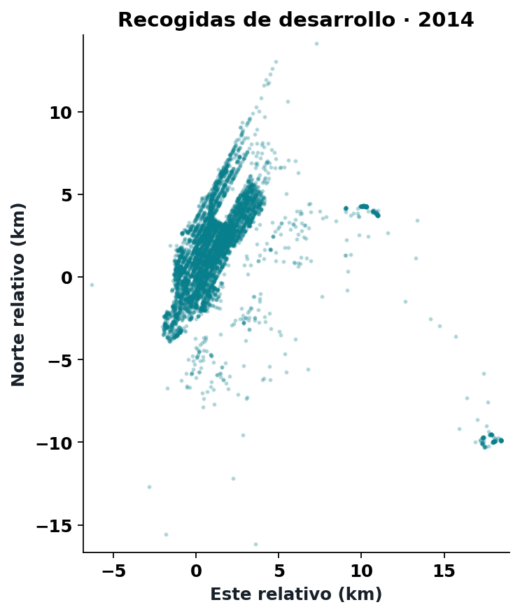
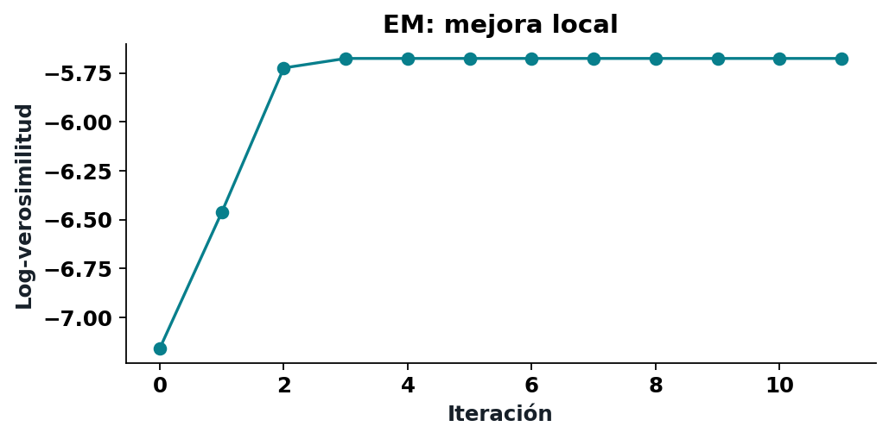
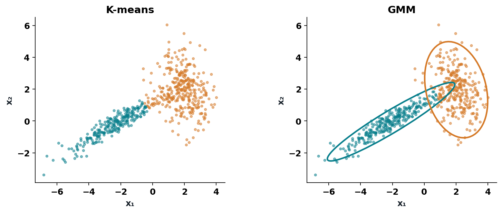
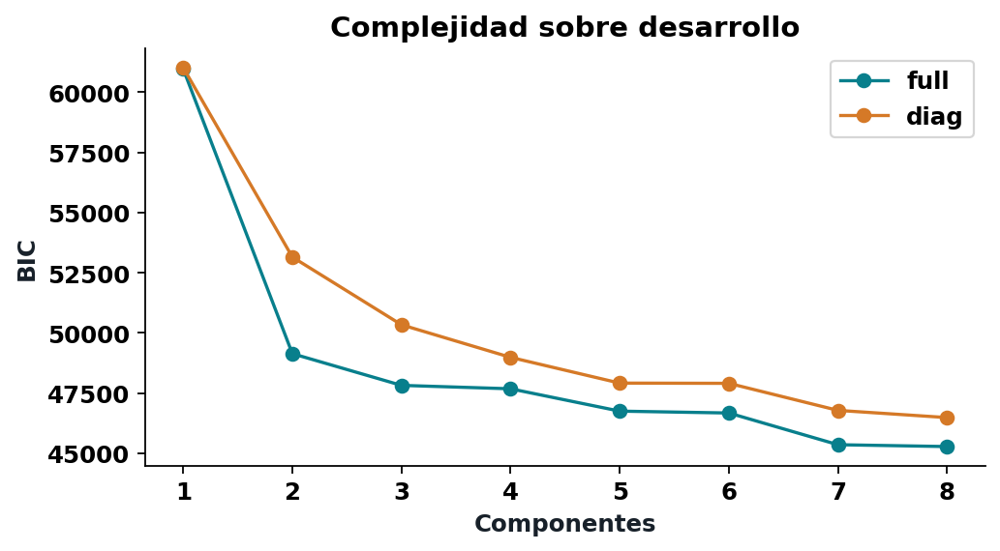
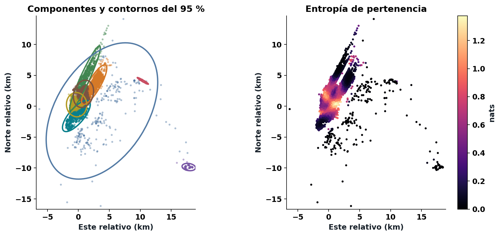

Modelos de mezclas gaussianas
Semana 8 · 14 de septiembre de 2026
¿Qué significa que dos recogidas pertenezcan al mismo grupo?

6.000 recogidas de desarrollo, 2014. Coordenadas proyectadas en km.
10 coordenadas imposibles.
3.789 registros con alguna coordenada cero.
330 ubicaciones fuera del área de estudio.
Estar fuera del área no demuestra un error.
Longitud/latitud → UTM 18N → kilómetros.
La traslación del origen conserva distancias.
Escalar cada eje por separado cambia la geometría.
\phi(x;\mu,\Sigma)=\frac{\exp[-\frac12(x-\mu)^T\Sigma^{-1}(x-\mu)]}{(2\pi)^{d/2}|\Sigma|^{1/2}}
La media localiza; la covarianza orienta y dispersa.
z_i\sim\operatorname{Categorical}(\pi),\qquad x_i\mid z_i=k\sim\mathcal N(\mu_k,\Sigma_k)
p(x_i)=\sum_{k=1}^K\pi_k\phi(x_i;\mu_k,\Sigma_k)
Los pesos suman uno. No observamos z_i.
\ell(\theta)=\sum_i\log\left[\sum_k\pi_k\phi(x_i;\mu_k,\Sigma_k)\right]
Si conociéramos las asignaciones, ajustar cada normal sería sencillo.
r_{ik}=\frac{\pi_k\phi(x_i;\mu_k,\Sigma_k)}{\sum_j\pi_j\phi(x_i;\mu_j,\Sigma_j)}
Para cada recogida: \sum_k r_{ik}=1.
Una responsabilidad es condicional al modelo.
Q=\sum_{i,k}r_{ik}\left[\log\pi_k-\frac12\log|\Sigma_k|-\frac12(x_i-\mu_k)^T\Sigma_k^{-1}(x_i-\mu_k)\right]
En el paso M, las responsabilidades quedan fijas.
N_k=\sum_i r_{ik},\qquad \pi_k^+=\frac{N_k}{n}
\mu_k^+=\frac{1}{N_k}\sum_i r_{ik}x_i
Son tamaños efectivos y medias ponderadas.
\Sigma_k^+=\frac{\sum_i r_{ik}(x_i-\mu_k^+)(x_i-\mu_k^+)^T}{N_k}
Usamos la media nueva.
El denominador es el tamaño efectivo, sin restar uno.
\ell(\theta)=\mathcal F(q,\theta)+\operatorname{KL}(q\|p_\theta(z\mid X))
E hace exacta la cota en el parámetro actual.
M mejora la cota manteniendo q fija.

Una trayectoria de EM en el ejemplo didáctico.
x=(-2,-1,1,2); pesos iguales; medias (-1,1); varianzas unitarias.

Datos sintéticos: dos formas de representar las mismas observaciones.
\operatorname{BIC}=-2\ell(\widehat\theta)+p\log n
p_{\mathrm{full}}=(K-1)+Kd+K\frac{d(d+1)}2
Comparar sobre las mismas filas y unidades.

K de 1 a 8; covarianzas completas y diagonales; cinco inicializaciones.

Contornos de componentes y entropía de pertenencia.
Un punto muy lejano puede tener:
¿Por qué no hay contradicción?
Selección: enero–septiembre de 2014.
Evaluación: 7.311 recogidas de octubre–diciembre.
Reportar log-densidad media y variación mensual.